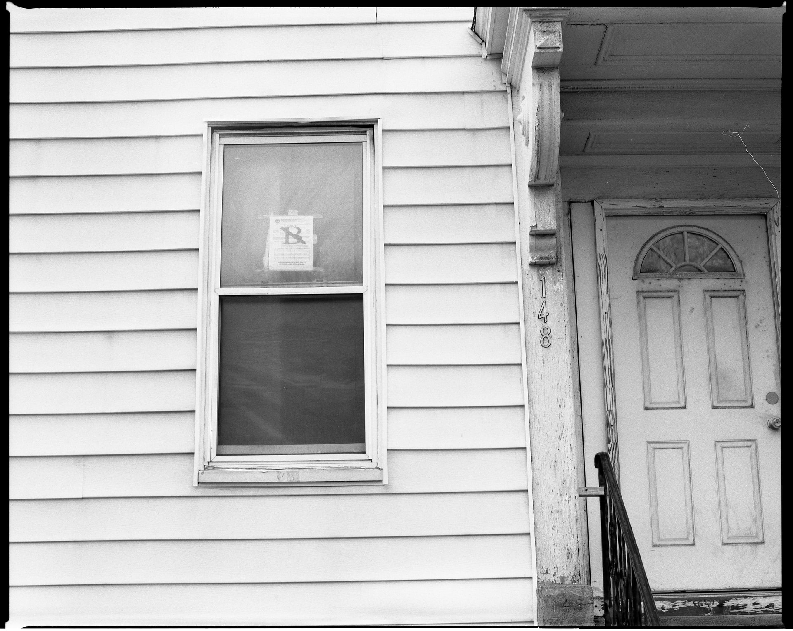
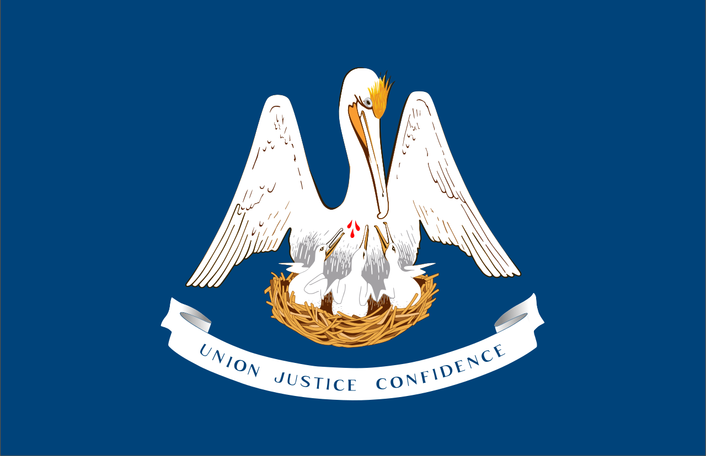
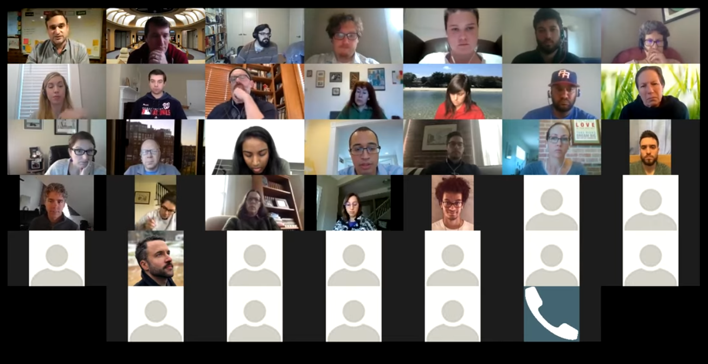

LIT Lab's Lookahead
Bringing the Assembly Line Further
The Assembly Line Project

- Started in March 2020
- 200+ volunteers building 30 guided interviews for self represented litigants
- Allowed emailing to the Appeals and Trial courts
Improvements: E-filing
- long-term email filing is burdensome for courts
- Same guided interviews, but:
- puts info directly into court's case management system
- gets info from courts's system to help users file into existing cases

Status: E-filing
- Louisiana: ready for Jefferson Parish
- Illinois: paperwork being signed
- Future: MA, parts of CA

Automating the Tedium
- It's hard to get 200+ volunteers
- most places have few dedicated forms people

Form Explorer

Prototyping: Weaver
- turn those forms into ready to edit guided interview drafts in one click

Refining: LIT Styler
- get actionable feedback on where to improve your interview
- prototype out now; alpha in a few months

More to Come!
 @wowitisbryce |
@wowitisbryce |